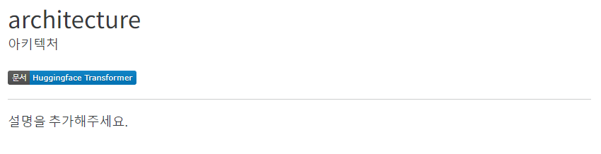
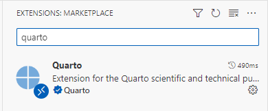
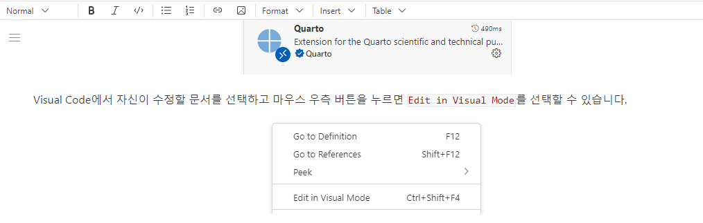

가이드 문서
이 문서는 용어 사전을 사용하는 방법과 용어를 등록하기 위한 정보를 전달하기 위해 작성되었습니다.
용어 페이지 구조
용어 사전에 등록된 용어 설명 페이지의 구조를 알아봅니다. 용어 사전에 등록된 상세 페이지는 영어와 한국어 용어 이름으로 구성됩니다. 아래의 archirecture로 등록된 상세 페이지를 통해 좀 더 자세히 알아보겠습니다. architecture라는 영어에 대한 한국어 용어명이 바로 아키텍처로 표시됩니다. 바로 밑에는 마크다운 배지로 영어 용어가 사용되었던 원본 문서 링크가 연결되었습니다.

arcitrecture용어에 대한 웹페이지는 용어 사전 소스파일의 archirecture.qmd파일의 정보로 생성됩니다. 코드의 상단의 title과 description은 각각 용어의 영어와 한국어 표현을 나타내고 url은 용어가 나온 원본 문서의 위치를 의미합니다. 용어 사전의 정보가 코드로 어떻게 표현되었는지 아래의 코드에서 확인할 수 있습니다.
---
title: 'architecture'
description: '아키텍처'
url: https://huggingface.co/docs/transformers/index
---
<a href="https://huggingface.co/docs/transformers/index" target="_blank">
<img loading="lazy"
alt="src: HuggingFace Transformer"
src="https://img.shields.io/badge/문서-Huggingface_Transformer-blue" >
</a>딥러닝 분야에 따라 동일한 용어가 다른 뜻으로 사용되거나 문서에 따라 한국어 번역 방식이 다를 수 있습니다. 각 문서에는 원본 문서에 대한 링크가 있기 때문에 원본 문서별로 일관성 있게 번역 용어가 사용될 수 있습니다. 마크다운 배지는 image shields io를 이용합니다. 배지의 생성 방식은 코드에서 이미지 소스의 주소를 잘 살펴보면 이해할 수 있습니다. 마크다운 배지에 표시되는 문구는 img shields io에 전달하는 URL 정보와 동일하네요. 위의 코드에서는 문서-Huggingface_Transformer-blue 를 이미지 위치로 전달했고 문서, Huggingface_Transformer, blue의 3개의 배지 정보는 구분자 -로 분리됩니다. 공백을 _로 표시했음을 주의하세요.
Quarto 문서 작성하기
문서를 작성을 위해 quarto에 대해서 배워봅니다.
준비 하기
딥러닝 용어 사전은 quarto를 이용하여 작성되었습니다. Quarto 웹사이트로 이동하여 프로그램을 설치해주세요. 설치가 완료되었다면 이제 본격적으로 문서를 작성할 준비를 끝났습니다.
용어 사전의 구조를 살펴볼까요? 용어 사전에 작성된 용어들은 아래의 terms폴더에 하나의 파일 형태로 생성됩니다. 예를 들어 convolution을 수정하는 경우 terms 폴더에 생성된 convolution.qmd파일을 수정합니다.
├── glossary
│ ├── dictionary
| │ └── terms
| | ├── architecture.qmd
| | ...
| | ├── convolution.qmd
| | ...
| │ └── speech_enhancement.qmd새로운 용어 작성
앗, 제가 찾는 용어가 없습니다! 새로운 용어를 등록하는 경우 terms폴더에 등록하려는 용어명과 동일한 파일명으로 qmd파일을 생성합니다.
- 신규 용어는 모두 소문자이며 공백은
_로 변경하여 파일명을 생성합니다. - 파일명은 모두
소문자로 작성하고 공백은_로 대체하여 사용하고 있습니다. - 같은 파일명이 있는 경우
_1,_2와 같이postfix를 붙여 추가합니다.directory.qmddirectory_1.qmd
신규 용어 파일명 생성 규칙에 맞게 파일을 생성한 후 문서 작성을 시작합니다.
문서 작성
딥러닝 용어사전은 깃헙 리포지토리(repository)로 관리되기 때문에 문서 작성을 위해서 Pseudo-Lab 깃 리포지토리를 Fork하여 문서를 작업합니다. Fork된 리포지토리에서 수정할 웹페이지의 html 파일명과 동일한 이름의 qmd 확장자 파일을 열어 문서를 수정할 수 있습니다.
문서 작성은 기본적으로 markdown언어를 이용하여 작성하지만 markdown에 익숙하지 않은 경우라면 Visual Code를 이용하는 것을 추천드립니다. Visual Code의 extention 메뉴에서 quarto를 검색하여 익스텐션을 설치할 수 있으며 Figure 1 의 quarto 익스텐션은 GUI환경에서 문서를 쉽게 작성있도록 도와줍니다.

Visual Code에서 자신이 수정할 문서를 선택하고 마우스 우측 버튼을 누르면 Edit in Visual Mode를 선택할 수 있습니다. 선택을 완료하면 markdown형태로 표시되던 문서가 wysiwyg1 에디터로 변경되고 Figure 2 와 같이 메뉴를 통해서 문서를 작성할 수 있습니다.

미리 보기
VS Code등의 에디터를 사용했다면 자신이 수정한 내용을 바로 확인할 수 있습니다. 만일 GUI방식으로 문서를 작성하지 않는 경우 아래의 quarto preview명령을 이용해서 문서를 로컬 웹브라우져에서 확인할 수 있습니다.
cd glossary
quarto previewpreview명령을 수행하면 로컬 컴퓨터에 브라우져가 실행되고 수정된 웹사이트를 바로 확인할 수 있습니다. 변경사항에 문제가 없다면 이제 PR(Pull Request)를 진행할 수 있습니다.
Pull Request 작성하기
PR(Pull Request)는 오픈소스 개발에서 주로 사용되는 개념입니다. 변경 사항을 다른 개발자들와 리뷰하고 통합하기 위해 사용됩니다. 일반적인 진행 방식은 아래와 같습니다.
변경점 적용을 위해서 깃헙 사이드에서
딥러닝 용어사전원본 리포지토리를Fork하여 리포지토리를 새롭게 생성합니다.Fork한 리포지토리에서 수정을 진행하기 위한 branch를 생성하고 수정을 진행합니다. (이 때 하나의 PR이 하나의 변경점을 갖도록 작업합니다. 변경점에 대한 이해와 다른 개발자들의 리뷰에 도움이 됩니다.)리포지토리로
push를 진행하면 자신의 깃헙 사이트에 PR 버튼이 생성된 것을 확인할 수 있습니다. 변경점에 대한 설명을 PR 템플릿을 이용해 작성하고 PR버튼을 누르면 원본 리포지토리에 PR이 생성됩니다.다른 개발자들의 리뷰가 진행되어 수정사항이 있다면 내용을 반영하고
push하는 과정을 반복합니다.리뷰에 대한 수정이 완료되었다면 PR 템플릿을 참고하여 머지를 요청합니다. 승인이 완료되면 원본 리포지토리에 변경점이 적용됩니다.
이제 여러분이 작성한 용어를 용어 사전에서 확인할 수 있습니다! PR에 대한 좀 더 자세한 설명을 원하신다면 참고 링크2 3를 확인 부탁드립니다.